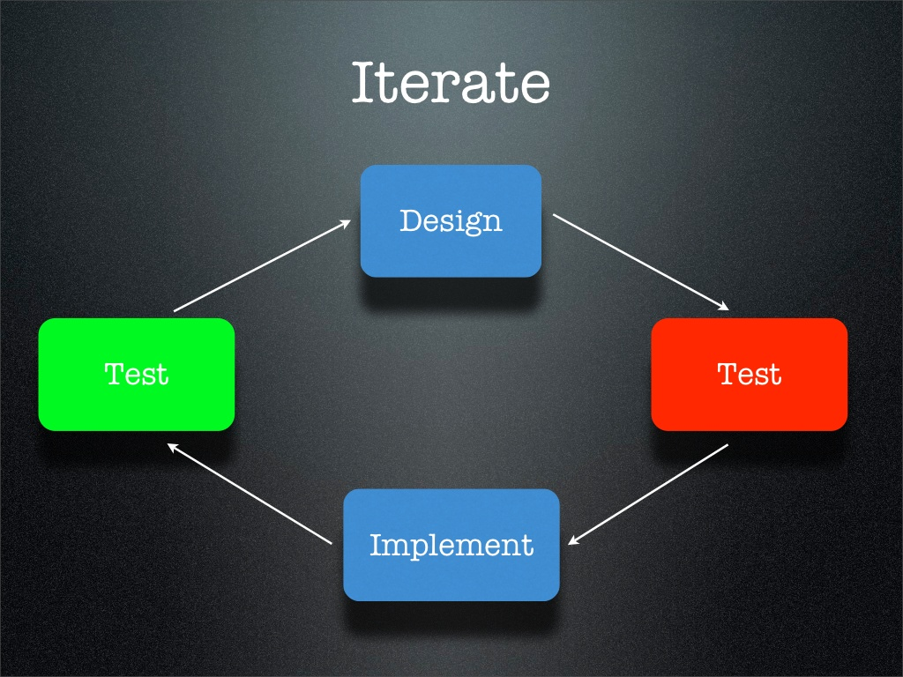

How do we Test?
Can't Reuse
Readable
Reusable
Maintainable
Testing is hard for bad code
Unit Test saves Clicks

Qunit
QUnit
How much to Test
Stackoverflow -Kent Beck
Behavior Driven Development
Cucumber
←
→
Go to slide:
#